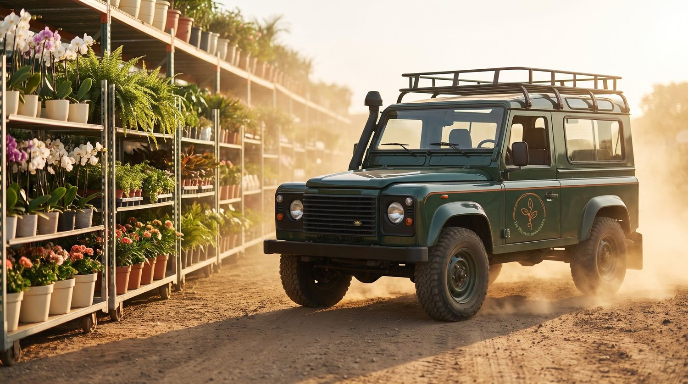

DienstenServices
Hoe we jou
laten groeienHow we
help you grow
Van verkoop en beurzen tot data, fotografie en Floriday, wij ontzorgen de kweker van a tot z.From sales and trade fairs to data, photography and Floriday, we unburden the grower from A to Z.
01 · VerkoopSales
Daghandel, actie
& harde retailDay trade, promo
& hard retail
Verkoop staat bij ons centraal. Samen met jou zorgen we ervoor dat jouw producten op precies het juiste moment onder de aandacht komen van de juiste klanten. Dankzij onze uitgebreide klantprofielen, slimme data en een sterk internationaal netwerk bereiken we exporteurs, tuincentra en grote retailketens op het moment dat jouw product op zijn best is.Sales are at the heart of what we do. Together with you, we make sure your products get in front of the right customers at exactly the right moment. Thanks to our detailed customer profiles, smart data and a strong international network, we reach exporters, garden centres and major retail chains precisely when your product is at its best.
- Daghandel, actie en harde retailDay trade, promotions and hard retail
- Alle contacten aanwezig, van exporteurs tot tuincentraAll contacts in place, from exporters to garden centres
- Jouw handel in vertrouwde handenYour trade in trusted hands
 01
0102 · BedrijfsadviesBusiness advice
Sparringpartner
op de kwekerijSparring partner
at the nursery
Bij ons kun je met meer terecht dan alleen je handel. Zit je met een vraag over strategie, marketing, teelt of de koers van je bedrijf, dan denken we graag met je mee. Tachtig jaar ervaring maakt ons een sterke sparringpartner en die kennis delen we altijd graag.With us you can turn to more than just your trade. Have a question about strategy, marketing, cultivation or the direction of your business? We're happy to think along. Eighty years of experience makes us a strong sparring partner, and we love to share that knowledge.
BedrijfsstrategieBusiness strategy
De koers voor de lange termijn, met een frisse blik van buitenaf.Your long-term course, with a fresh outside perspective.
MarketingMarketing
Jouw merk en product sterker en zichtbaarder in de markt.Your brand and product stronger and more visible in the market.
BedrijfsvoeringOperations
Slimmer, efficiënter en gezonder ondernemen.Smarter, more efficient and healthier business.
OntwikkelingDevelopment
Nieuwe producten, nieuwe kansen en groei.New products, new opportunities and growth.
TeeltCultivation
Meedenken over kwaliteit, assortiment en de juiste keuzes.Thinking along on quality, assortment and the right choices.
PrijsstrategiePricing strategy
De juiste prijs op het juiste moment.The right price at the right moment.
 03
0303 · FloraHollandFloraHolland
Thuis op de
Trade FairAt home at the
Trade Fair
De FloraHolland Trade Fairs zijn dé internationale ontmoetingsplek van de sierteelt. Twee keer per jaar zijn wij daar samen met onze kwekers volop aanwezig. Niet aan de zijlijn, maar midden op de beursvloer, met één doel: onze kwekers, hun bedrijven en vooral hun producten zo sterk mogelijk aan de markt presenteren.The FloraHolland Trade Fairs are the international meeting place of floriculture. Twice a year we're there in force, together with our growers. Not on the sidelines, but right in the middle of the fair floor, with one goal: presenting our growers, their businesses and above all their products as strongly as possible to the market.
Als De Plantenmakelaars hebben we altijd een gezamenlijke stand. Heb je al een eigen plek waar je tevreden over bent? Dan blijf je daar staan. En anders ben je net zo welkom om bij ons aan te sluiten. Zo krijgt iedere kweker een sterk podium dat bij zijn bedrijf past.As De Plantenmakelaars we always have a shared stand. Do you already have a spot of your own that you're happy with? Then you stay there. And if not, you're just as welcome to join us. That way every grower gets a strong platform that suits their business.
Ieder bedrijf heeft zijn eigen verhaal, maar samen vormen we één sterk geheel: zakendoen, nieuwe contacten leggen én gezelligheid. Wij zorgen voor koffie, een verzorgde lunch en veel bekende gezichten. Daarom noemen wij het: thuis op de Trade Fair.Every business has its own story, but together we form one strong whole: doing business, making new contacts and enjoying good company. We take care of coffee, a proper lunch and plenty of familiar faces. That's why we call it: at home at the Trade Fair.
- Jouw artikelen en bedrijf volop in de spotlightYour products and business firmly in the spotlight
- Een eigen plek of aansluiten bij onze gezamenlijke stand: wat het beste bij jou pastYour own spot or join our shared stand: whatever suits you best
- Samen zichtbaar als één sterk netwerk van kwekersVisible together as one strong network of growers
- Volop ruimte voor bestaande én nieuwe klantcontactenPlenty of room for existing and new customer contacts
- Een gezellige, gastvrije beursbeleving voor jou en je klantenA sociable, welcoming fair experience for you and your customers
- Een verzorgde lunch voor onze kwekersA proper lunch for our growers
04 · FloriWorldFloriWorld
Jouw handel op
de karrenbeursYour trade at
the cart fair
Een aantal keer per jaar organiseert FloriWorld een karrenbeurs. Met De Plantenmakelaars zijn we daar samen met onze kwekers graag bij. Geen grote stands, maar handel die overzichtelijk en aantrekkelijk wordt gepresenteerd op Deense karren. Als kweker bepaal je per beurs zelf of je deelneemt.A few times a year FloriWorld organises a cart fair. With De Plantenmakelaars we're happy to be there, together with our growers. No big stands, but trade presented clearly and attractively on Danish trolleys. As a grower you decide for each fair whether you take part.
Tussen 10.00 en 13.00 uur staat persoonlijk contact centraal. Je spreekt klanten en nieuwe kopers, presenteert je assortiment en hoort direct wat er speelt in de markt.Between 10.00 and 13.00 personal contact takes centre stage. You speak with customers and new buyers, present your assortment and hear straight away what's happening in the market.
Na afloop worden de beurskarren verkocht aan één of meerdere exporteurs. Wat je meeneemt naar de beurs, gaat dus niet terug naar de kwekerij.Afterwards the fair trolleys are sold to one or more exporters. So what you bring to the fair doesn't go back to the nursery.
FloriWorld onderzoekt daarnaast mogelijkheden om de karrenbeurzen ook in het Westland te organiseren, zodat kwekers en kopers op meerdere momenten en locaties bij elkaar worden gebracht.FloriWorld is also exploring ways to hold the cart fairs in the Westland as well, so that growers and buyers are brought together at more moments and locations.
- Jouw handel aantrekkelijk gepresenteerd op Deense karrenYour trade presented attractively on Danish trolleys
- Direct contact met exporteurs en andere kopersDirect contact with exporters and other buyers
- Kwekers aanwezig van 10.00 tot 13.00 uurGrowers present from 10.00 to 13.00
- Geen retourhandel of gedoe achterafNo return trade or hassle afterwards
- Inclusief lunchLunch included
 04
04
05 · Data & AIData & AI
FTE-Digital:
onze digitale collegaFTE Digital:
our digital colleague
FTE-Digital is onze digitale collega, ontwikkeld door De Plantenmakelaars samen met Data Botanica. We combineerden onze commerciële kennis uit de sierteelt met data, technologie en AI. Het resultaat begrijpt precies waar wij elke dag mee bezig zijn: kansen vinden en handel creëren. Dag en nacht analyseert FTE-Digital de markt, jouw handel en de kansen daarin, zonder koffiepauze en met een geheugen waar wij niet tegenop kunnen: wat hij ziet, onthoudt hij.FTE Digital is our digital colleague, developed by De Plantenmakelaars together with Data Botanica. We combined our commercial knowledge from floriculture with data, technology and AI. The result understands exactly what we work on every day: finding opportunities and creating trade. Day and night, FTE Digital analyses the market, your trade and the opportunities within it, without a coffee break and with a memory we can't match: what it sees, it remembers.
Dat levert ons vooral tijd op, tijd voor wat écht telt: het persoonlijke gesprek. FTE-Digital rekent en signaleert, wij bellen, adviseren en handelen. Was je actie vorig jaar een succes? Dan tikt hij ons op tijd op de schouder, zodat we proactief kunnen zijn. Zo vervangt hij de verkoper niet, maar maakt hij hem beter voorbereid en houden we meer tijd over voor jou.Above all, that gives us time, time for what really counts: the personal conversation. FTE Digital calculates and signals, we call, advise and trade. Was your campaign a success last year? Then it taps us on the shoulder in time, so we can be proactive. That way it doesn't replace the salesperson, but makes them better prepared and keeps us more time for you.
- FTE-Digital rekent en onthoudtFTE Digital calculates and remembers
- De Plantenmakelaars zien de kans en komen in actieDe Plantenmakelaars spot the opportunity and take action
 06
06
06 · Fotografie & beeldbewerkingPhotography & editing
Eigen topfotografie
voor de kwekerIn-house top
photography
Fotografie maakt het verschil. In de sierteelt wordt vrijwel alles ingekocht op basis van beeld: een koper ziet jouw plant eerst op de foto, niet in het echt. Een sterke foto laat de plant op z'n mooist zien en trekt de aandacht, juist tussen het enorme aanbod op de handelsplatformen. Daar springt jouw product eruit, of het verdwijnt in de rij.Photography makes the difference. In floriculture almost everything is bought based on imagery: a buyer sees your plant on the photo first, not in real life. A strong photo shows the plant at its best and grabs attention, especially amid the huge offering on the trading platforms. That's where your product stands out, or disappears in the crowd.
Bij ons doet Wouter de fotografie. Hij maakt de meest professionele productfoto's met de beste apparatuur op de markt en heeft er inmiddels ruim 30.000 op zijn naam staan. Strak, uniform en klaar voor Floriday en elk verkoopkanaal. Met Photoshop en Lightroom perfectioneert hij beeld en kleur, helemaal afgestemd op jouw product.Wouter handles our photography. He shoots the most professional product photos with the best equipment on the market and has over 30,000 to his name by now. Crisp, uniform and ready for Floriday and every sales channel. With Photoshop and Lightroom he perfects image and colour, fully tailored to your product.
Benieuwd wat dat oplevert? Bekijk de galerij hieronder.Curious what that delivers? Take a look at the gallery below.
07 · Floriday & FloraNexusFloriday & FloraNexus
Jouw etalage op
Floriday en FloraNexusYour shop window on
Floriday and FloraNexus
De kennis van Floriday en FloraNexus hebben we volledig in huis en dat werk nemen we je graag uit handen. Wij beheren jouw aanbod op beide platformen van a tot z: actueel houden, scherp prijzen en presenteren met beeld dat verkoopt. Samen met de kweker zorgen we dat elk product precies op tijd bij de juiste kopers in beeld komt en dat startende producten op het juiste moment nieuwswaarde krijgen. Met onze eigen fotografie als basis bereik je zo een optimale marktpenetratie, zonder dat het jou tijd kost.We have full command of Floriday and FloraNexus in house, and we're happy to take that work off your hands. We manage your supply on both platforms from A to Z: keeping it up to date, pricing it sharply and presenting it with imagery that sells. Together with the grower we make sure every product reaches the right buyers exactly on time, and that new products gain news value at just the right moment. With our own photography as the foundation, you reach optimal market penetration without it costing you any time.
 07
07 08
0808 · FloraconceptsFloraconcepts
Digitale karren,
net als op de beursDigital trolleys,
just like at the fair
Wij bouwen digitale karren, zodat jouw handel ook online precies zo gepresenteerd wordt als op de beurs. Een koper ziet in één oogopslag hoe jouw product op de kar staat, met de juiste sfeer, samenstelling en presentatie. Zo blijft de kracht van de fysieke beurs behouden, óók op de handelsplatformen en springt jouw handel eruit tussen het enorme aanbod.We build digital trolleys, so your trade is presented online exactly as it is at the fair. A buyer sees at a glance how your product sits on the trolley, with the right look, composition and presentation. This keeps the power of the physical fair intact, on the trading platforms too, and makes your trade stand out amid the huge offering.

09 · Retail SafariRetail Safari
Zie. Begrijp.
Groei.See. Understand.
Grow.
Ga met ons mee op Retail Safari en ontdek de wereld achter de winkel. Twee keer per jaar, in het voorjaar en het najaar, bezoeken we toonaangevende retailers, tuincentra, bouwmarkten, groothandels en conceptstores. We kijken verder dan het schap en onderzoeken het waarom achter het assortiment, de presentatie, de klantbeleving en de strategie. Die inzichten vertalen we samen naar nieuwe kansen voor jouw bedrijf en groei die je echt in de praktijk voelt.Join us on the Retail Safari and discover the world behind the shop. Twice a year, in spring and autumn, we visit leading retailers, garden centres, DIY stores, wholesalers and concept stores. We look beyond the shelf and explore the why behind the assortment, presentation, customer experience and strategy. Together we translate those insights into new opportunities for your business and growth you can truly feel in practice.
- Internationale marktbezoekenInternational market visits
- Inzichten in retailtrendsInsights into retail trends
- Praktijkkennis die je direct toepastPractical knowledge you can apply right away
- Netwerken met retailprofessionalsNetworking with retail professionals
Samen jouw product
laten groeien?Grow your
product together?
Een innovatieve verkooporganisatie voor kwekers. Data én persoonlijke aandacht.An innovative sales organisation for growers. Data and personal attention.